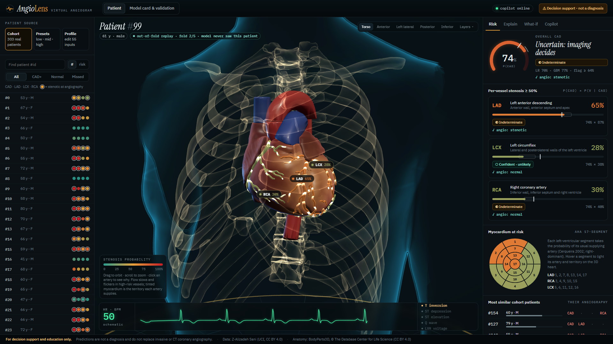
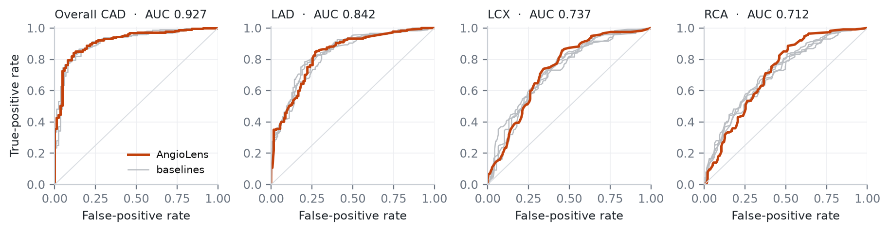
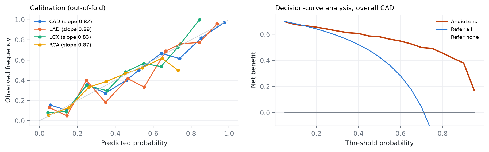
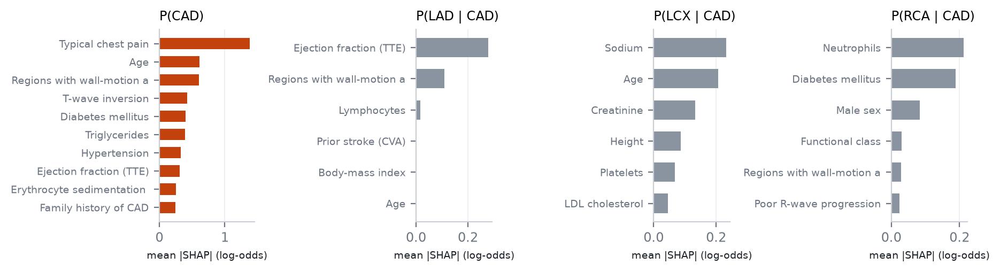
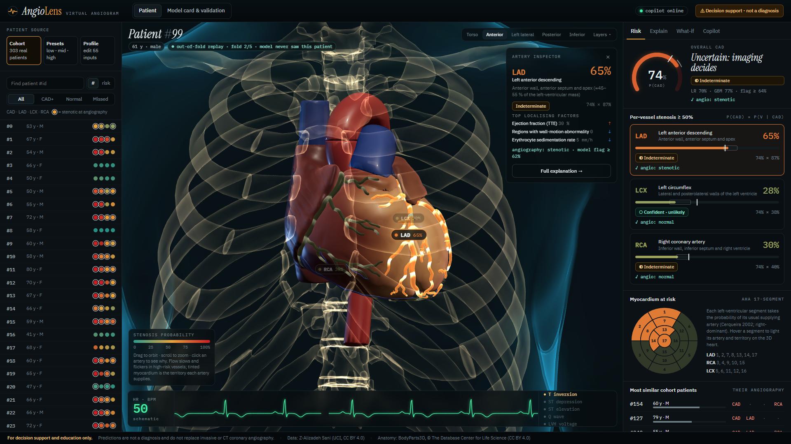

Coronary artery disease and per-vessel stenosis prediction, exactly explained and mapped onto a 3D heart ·
Random Forest Rangers (Arnav Joshi) · Multimodal AI Hackathon 2026 · Track A: Cardiovascular Risk Visualization & Prediction Code: github.com/Arnav020/AngioLens · Demo video: youtu.be/R_DU726G0Zs
Problem. Invasive angiography tells a cardiologist where coronary disease is. Routine clinical data
(history, ECG, labs, echo) arrives earlier and costs far less, but statistical risk scores turn it into a single opaque number.
What we built. AngioLens predicts overall CAD and ≥50 % stenosis of the LAD, LCX and RCA from {{NF}} routine features of the
Z-Alizadeh Sani cohort (n = {{N}}). It explains every prediction exactly with SHAP and renders it as a "virtual angiogram": a
real BodyParts3D heart whose arteries carry animated contrast flow coloured by risk, and whose myocardium shows the territory each
artery supplies. Key ideas: (1) a hierarchical model P(vessel) = P(CAD)·P(vessel | CAD) that is anatomically coherent
by construction; (2) an affine log-odds ensemble that keeps SHAP exactly additive after calibration; (3) conformal prediction
that says "indeterminate" instead of guessing; (4) honest out-of-fold replay of all {{N}} patients; (5) an LLM copilot whose every
number is machine-checked against the model output. Results (10×5 repeated nested CV): ROC-AUC
CAD {{AUC_CAD}} (95 % CI {{CI_CAD}}), LAD {{AUC_LAD}}, LCX {{AUC_LCX}}, RCA {{AUC_RCA}}; Brier {{BRIER_CAD}} for CAD; 90 % conformal coverage
held on every target; 60 fps on integrated graphics; 41 ms per explained prediction.

Figure 1. The AngioLens dashboard on cohort patient #99 (single-vessel LAD disease), replayed by the
cross-validation model that never saw this patient. Left: cohort browser (out-of-fold risk, angiography truth rings). Centre: BodyParts3D heart
inside an x-ray torso; arteries coloured by stenosis probability, myocardium tinted by territory at risk, ECG strip at the recorded heart rate.
Right: CAD gauge with conformal status, per-vessel cards with ground truth, AHA 17-segment map.
1What the system does
Predict overall CAD and LAD / LCX / RCA stenosis with calibrated probabilities, an operating flag, a model range and a 90 % conformal set.
Map each probability onto its artery in 3D (colour, contrast-flow speed, glow) and onto the myocardium it perfuses (3D territory tint + AHA bull's-eye). Rotate, zoom, pick an artery or any point on the heart muscle to inspect it.
Explain with exact SHAP waterfalls in two stages ("is there CAD?" and "where is it?"), clinical-domain totals, and a physiological breakdown of every measurement against its reference range.
Probe with counterfactual what-ifs and per-patient sensitivity curves; compare with the five most similar real patients and their angiograms.
Communicate via a grounded copilot (clinician / patient voice, English / Hindi, voice questions) and a one-page PDF report.
2Data & preprocessing
Dataset. Extension of Z-Alizadeh Sani (UCI #411, CC BY 4.0): {{N}} patients who underwent angiography, 55 raw clinical columns
plus targets LAD, LCX, RCA and Cath. Prevalence: CAD {{PREV_CAD}}, LAD {{PREV_LAD}},
LCX {{PREV_LCX}}, RCA {{PREV_RCA}}. Diseased vessels per patient: 0 → {{V0}}, 1 → {{V1}}, 2 → {{V2}}, 3 → {{V3}}.
Leakage guard. The four target columns are excluded from the feature registry and the build fails if any reaches the model
(asserted in code and in the test suite).
Audit findings. No missing values. Exertional CP is constant (all "N") and dropped. One record has
Cath = Normal although a vessel is stenotic; it is kept unchanged and reported, not silently fixed.
Encoding. A single feature registry (angiolens/schema.py) declares each of the {{NF}} model inputs once: raw column, clinical
domain (demographic, symptom/exam, ECG, lab, echo), unit, valid range, adult reference range and whether it is modifiable. Y/N → 0/1; sex →
binary; bundle-branch block → LBBB/RBBB indicators; valvular disease → ordinal 0–3. Training, API validation, the web form and the
physiological breakdown are all generated from this registry, so a new clinical feature is a one-line change.
Transforms (fitted inside every training fold only): log1p on right-skewed labs (FBS, creatinine, TG, BUN, ESR, WBC, platelets),
then standardisation for the linear branch. Trees use raw values.
Hierarchical targets. CAD is defined as ≥50 % narrowing in any vessel, so we factorise
P(vessel) = P(CAD)·P(vessel | CAD). Stage 2 learns only the localisation question among diseased patients. A vessel probability
can never exceed the CAD probability. Independent per-vessel models violate this in {{COH_DIRECT}} of out-of-fold predictions,
which would show a heart with a "70 % LAD" next to a "40 % CAD".
Exactly explainable calibrated ensemble. Each stage combines a sparse L1 logistic regression and a shallow LightGBM (500 trees,
8 leaves, strong subsampling) in log-odds space and then applies Platt scaling:
z(x) = a · ( w · zLR(x) + (1 − w) · zGBM(x) ) + b ⇒ φj(x) = a · ( w · φLRj(x) + (1 − w) · φTreeSHAPj(x) )
Every step is affine in log-odds, so SHAP values remain exactly additive (base + Σφ = calibrated logit to 10−6, unit-tested)
while the model keeps the accuracy of the blend. C ∈ {0.05, 0.1, 0.2, 0.4}, w ∈ {0, .25, .5, .75, 1} and (a, b) are chosen by inner 5-fold CV
on log-loss. Deployed choices: {{STAGES}}.
Uncertainty. Mondrian (class-conditional) conformal prediction at α = 0.10 turns each probability into a prediction set. "Both
outcomes" is shown as indeterminate. The calibrated LR-vs-GBM spread is shown as a model range. Operating thresholds maximise Youden's J
on inner out-of-fold predictions ({{THR}}).
4Validation methodology & predictive performance
10×5 repeated, stratified, nested cross-validation (strata = CAD × number of diseased vessels). Hyper-parameters, calibration,
thresholds and conformal quantiles are fitted inside each outer training split, so no outer-test patient ever influences a modelling
decision. 95 % CIs combine patient bootstrap with repeat-to-repeat CV variation (1000 draws). The full run is deterministic and takes
{{RUNTIME}} s on a laptop CPU.
Target
Prev.
ROC-AUC (95 % CI)
PR-AUC
Brier
ECE
Prec.*
Recall / Spec*
Acc*
F1*
MCC*
Acc · F1 @0.5
{{RESULTS}}
* at the operating threshold selected by Youden's J in the inner CV (honest: chosen without the outer test fold).
Competing models, identical outer splits: mean ROC-AUC (Brier)
Model
Overall CAD
LAD
LCX
RCA
Coherent output†
{{COMPARISON}}
† share of predictions with every P(vessel) ≤ P(CAD). Differences between models are within one standard deviation for most
targets. AngioLens matches the best discrimination while giving the best or tied-best Brier score, exact explanations and 100 % coherence.

Figure 2. Out-of-fold ROC curves (repeat 1). AngioLens in orange, the four baselines in gray.

Figure 3. Left: reliability of out-of-fold probabilities (slope 1 = perfect).
Right: decision-curve analysis for CAD. AngioLens gives higher net benefit than "refer everyone" across referral thresholds of roughly 10–90 %.
Conformal prediction: does "90 % confident" hold out-of-sample?
Target
Coverage
Indeterminate
Acc. when decided
Cal. slope
{{CONFORMAL}}
Reading the numbers honestly
Overall CAD is predicted well (AUC {{AUC_CAD}}). When the model commits, it is right {{ACCD_CAD}} of the time while abstaining on
{{IND_CAD}} of patients. Localising the lesion from routine data is much harder: LAD is good (AUC {{AUC_LAD}}), LCX/RCA are moderate. The
system says so, flagging {{IND_LCX}} / {{IND_RCA}} of LCX/RCA predictions as indeterminate rather than painting a confident heart. Published
per-artery accuracies of 83–86 % on this dataset (Alizadehsani et al., 2020) were not obtained under nested validation, so they are not
directly comparable.
5Clinical interpretability
Two-stage exact SHAP. "Why CAD?" (stage 1) and "why this artery, given CAD?" (stage 2) waterfalls on a log-odds axis labelled in
probability. Contributions sum exactly to the displayed probability. Clicking an artery in 3D switches the explanation to its stage.
Physiological breakdown. Every measurement with value, unit, reference-range bar, status (high / low / normal) and its signed
contribution; totals per clinical domain (demographics, symptoms, ECG, labs, echo).
Case-based evidence. The five nearest cohort patients (distance weighted by global SHAP importance) with their angiography results.
Counterfactual probes. "If chest pain were atypical…" and sensitivity curves. These revealed confounding by treatment: setting
LDL to 70 mg/dL raises modelled CAD risk for 64 % of patients, because LDL is no higher in CAD patients (104 vs 106 mg/dL; many are on
statins). The UI flags such results as counter-intuitive associations, not treatment effects.

Figure 4. Global mean |SHAP| of the deployed model. Stage 1 is dominated by typical chest pain, age, wall-motion
abnormality and ECG changes, which is clinically plausible. Stage-2 localisers are weak and partly lab-based, consistent with the moderate LCX/RCA performance.
63D anatomical pipeline
Source. BodyParts3D 4.0 (DBCLS, CC BY 4.0), selected by FMA id: LAD tree (anterior interventricular branch + diagonals, conus and
right-anterior branches, 18 meshes), circumflex (6), RCA tree (trunk, marginal, posterior descending, ventricular and conus branches, 29),
left main, four chambers, cardiac veins, aorta, pulmonary trunk, SVC, lungs, rib cage, spine, clavicles and the torso skin.
Epicardial correction. BodyParts3D models ventricular cavities, so arteries floated 9 mm (LV) and 4 mm (RV) above the
surface. We measured these gaps, subdivided and Taubin-smoothed the shells, and offset them along normals (7.5 / 3 mm). Arteries now sit
1–2 mm from the epicardium.
Baked attributes (scripts/build_anatomy.py): for every artery vertex its distance downstream of the coronary ostium (found as
the vertex nearest the aortic root), which drives the flow shader. For every ventricular vertex, soft perfusion-territory weights for LAD /
LCX / RCA (softmin of distance to each artery tree, τ = 7 mm, proximity falloff), which drive the territory tint and region picking.
Output: one GLB (4.9 MB, 194 k triangles) with named nodes, so model outputs map 1:1 to LAD, LCX, RCA.

Figure 5. Anterior view, LAD selected: the artery is emphasised, other vessels and bull's-eye segments dim,
and the inspector lists its probability, conformal status, localising factors and angiography truth.
Rendering (React Three Fiber). Custom GLSL: arteries show contrast boluses travelling from ostium to apex that slow down and flicker
as stenosis probability rises, plus an additive halo shell instead of a bloom pass. Myocardium uses per-vertex territory colouring. The torso and
bones use a fresnel x-ray shader with a scan line. The heart beats at the patient's recorded pulse, in sync with a schematic ECG whose
morphology reflects the recorded ST / T / Q / BBB / LVH findings. No post-processing and no float render targets: 60 fps at 1080p on Intel
Iris Xe integrated graphics, and it also runs on software WebGL.
7System integration & extensibility
A FastAPI backend serves the pre-built React app and a typed REST API: /api/predict (prediction + exact SHAP for all four stages +
similar patients, 41 ms median), /api/cohort/{id} (honest out-of-fold replay), /api/sensitivity (11 ms),
/api/encode (raw UCI rows / CSV / JSON import), /api/copilot, /api/transcribe, /api/report
(PDF) and /api/model-card. Every slider move re-predicts (debounced 90 ms, in-flight requests aborted), so the arteries, territory
tint, gauge, waterfall and ECG update in real time. Extending the system is local: a new clinical feature is one registry entry plus
data; a new model is a Stage with decision() and shap(); a new anatomical structure is one
FMA id in the build script and one node name in the viewer.
Grounded copilot. The LLM (Groq gpt-oss-120b) never predicts. It rephrases a deterministic fact sheet derived from the model output.
Every number in its answer (Devanagari digits included) is checked against that sheet; on failure it is asked to rewrite once, then
replaced by a template. Out-of-scope questions (dosing, targets) are declined. Without an API key everything works offline.
8Usage
pip install -r requirements.txt → python run.py → open http://127.0.0.1:8000. The trained model,
built anatomy and built web app ship in the repository. To reproduce from scratch: python scripts/train.py (nested CV, ~5 min),
python scripts/build_anatomy.py (downloads BodyParts3D), cd web && npm ci && npm run build; tests:
pytest (20 tests). Optional .env with GROQ_API_KEY enables the LLM and voice. Docker: docker build -t angiolens . && docker run -p 8000:8000 angiolens.
9Limitations & safety
Decision-support and educational prototype, not a medical device. The UI shows a persistent disclaimer bar, an
acknowledgement dialog, conformal "indeterminate" states and disclaimers in every PDF and copilot answer.
Single-centre, 303-patient cohort; no external validation. Performance will differ in other populations and referral settings.
Vessel localisation is moderate (LCX/RCA AUC ≈ 0.71–0.74). The dataset contains no lesion location, severity grade or troponin.
The 3D heart is a generic anatomy (right-dominant). Territory mapping follows standard AHA assignments, not this patient's coronary tree.
SHAP and what-ifs describe model associations, which are confounded by treatment. They are not causal effects or treatment advice.
The ECG strip is schematic. The copilot can only rephrase; it inherits every limitation above.
10References
Alizadehsani R, Roshanzamir M, Sani Z. Extension of Z-Alizadeh Sani dataset. UCI ML Repository, 2013. doi:10.24432/C5461K
Alizadehsani R, et al. Model uncertainty quantification for diagnosis of each main coronary artery stenosis. Soft Computing 2020;24(13):10149–10160.
Mitsuhashi N, et al. BodyParts3D: 3D structure database for anatomical concepts. Nucleic Acids Res 2009;37:D782–D785.
Cerqueira MD, et al. Standardized myocardial segmentation and nomenclature for tomographic imaging of the heart. Circulation 2002;105:539–542.
Lundberg SM, Lee S-I. A unified approach to interpreting model predictions. NeurIPS 2017; Lundberg SM, et al. TreeSHAP. Nat Mach Intell 2020.
Vovk V, Gammerman A, Shafer G. Algorithmic Learning in a Random World. Springer 2005 (Mondrian conformal prediction).
Vickers AJ, Elkin EB. Decision curve analysis. Med Decis Making 2006;26:565–574.
Platt J. Probabilistic outputs for support vector machines. 1999; Ke G, et al. LightGBM. NeurIPS 2017.